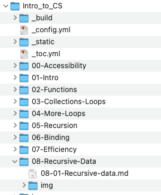

Recursive data structures
Contents
Recursive data structures#
Just as a function can call itself, a collection data structure like a dictionary, list, or tuple can contain other collections of the same kind. We refer to these as nested structures.
We have already seen nested lists to represent matrices,the grid of letters in our Boggle project. Those nested structures had a fixed dimension, e.g., our Boggle boards used a single level of nesting to represent two-dimensional grids. We never had to determine whether one of the lists contained individual tiles or another level of nested list. Now we will consider structures in which the level of nesting may vary.
A computer file system is a familiar nested collection. Directories (also called “folders”) are collections that may contain other directories, individual files, or both. The operating system of your computer likely can display parts of this nested structure through some kind of “Finder” or “Explorer” application:

Recursive data structures, like recursive algorithms, have one or more base cases and one or more recursive cases. We process recursive data structures with recursive functions. A base case in the data structure will be handled by a base case in a function, and a recursive case in the data structure will be handled by a recursive function call.
We will need a way to distinguish the base cases from recursive
cases. For a directory structure, Python provides
functions os.isfile and os.isdir to identify the base case (a
regular file) and the recursive case (a directory), respectively,
as well as functions to combine and extract parts of paths
and to find the current working directory.
A function to recursively print the directory tree would use these
to choose between the base and recursive cases of the algorithm.
import os
def print_directory_tree(path: str, level: int):
"""Represent nesting by indentation"""
name = os.path.basename(path) # Just the last part of the path
if os.path.isfile(path):
# The base case ...
# no recursive call
print(f"{leader(level)}{name}")
elif os.path.isdir(path):
# The recursive case ...
# a directory that may contain other files and directories
print(f"{leader(level)}{name}")
for content in os.listdir(path):
print_directory_tree(os.path.join(path, content), level + 1)
else:
# "Hidden" files may be identified as neither files nor directories
print(f"{leader(level)}[Hidden: {name}]")
def leader(level: int) -> str:
"""A leader in typography is a series of characters
that are used as a visual aid to connect items on a page.
[per Wikipedia]
"""
if level == 0:
return ""
return "| " * (level - 1) + "|–– "
# Print directory (folder) tree from current working directory
print_directory_tree(os.getcwd(), level=0)
08-Recursive-Data
|–– 08-02-Nested-Dicts.md
|–– img
| |–– directory-tree-vertical.png
| |–– directory-tree-horizontal.png
|–– Samples
| |–– dir_tree.py
|–– 08-01-Recursive-Data.md
Note
You needn’t remember the functions for manipulating file paths.
The point of the example is to see how containment of
a file or directory
within another directory is exactly mirrored by recursive calls to
the print_directory_tree function. This exact mirroring between
the structure of data and recursion in computation will be same
when our recursive data structures are lists, dictionaries, tuples,
or any other kind of nested collection.
Using isinstance to distinguish types#
Suppose we wanted to sum all the integers in a nested
list like [[1, 2], 3, [4, [5, 6]]]. We’ll call that a
deep sum, because it sums even integers that are deeply nested in
the list. Our recursive algorithm should be something like this:
(Base case) The deep sum of a single integer is that integer itself.
(Recursive case) The deep sum of a nested list of integers is the sum of the deep sums of each element of the list.
To distinguish the base case from the recursive case, we need to
determine whether a value is a list or an integer. The Python
function isinstance can tell us that.
def what_is_it(value):
"""Distinguish possibly nested list from integer"""
if isinstance(value, int):
print(f"{value} is an int")
elif isinstance(value, list):
print(f"{value} is a list")
else:
print(f"{value} is neither int nor list")
what_is_it([1, 2, 3])
what_is_it([[1, 2], 3, [4, [5, 6]]])
what_is_it(42)
what_is_it([])
[1, 2, 3] is a list
[[1, 2], 3, [4, [5, 6]]] is a list
42 is an int
[] is a list
Using isinstance, we can write a deep_sum function with the base
case and recursive case as outlined above:
def deep_sum(nest) -> int:
"""Return a sum of all integers in a nested list of int"""
if isinstance(nest, int):
return nest
elif isinstance(nest, list):
total = 0
for el in nest:
total += deep_sum(el)
return total
else:
assert False, f"Wait, what is this thing? {nest}"
print(f"Deep sum of [1, 2, 3] is {deep_sum([1, 2, 3])}")
print(f"Deep sum of [[1, 2], 3, [4, [5, 6]]] is {deep_sum([[1, 2], 3, [4, [5, 6]]])}")
print(f"Deep sum of 42 is {deep_sum(42)}")
print(f"Deep sum of [] is {deep_sum([])}")
Deep sum of [1, 2, 3] is 6
Deep sum of [[1, 2], 3, [4, [5, 6]]] is 21
Deep sum of 42 is 42
Deep sum of [] is 0
Type declarations for recursive collection types#
As you may have noticed, I did not annotate the formal argument
value with a type. If I annotated it as value: int, it would be
wrong when value was a list. If I annotated as value: list, it
would be wrong when value was an int. How can I give a clear,
concise, and correct type declaration for a recursive collection,
such as a nested list?
We will use two features of Python type annotations to solve this
conundrum. First, Python allows us to give names to data types.
For example, suppose I were using list[list[int]] in many places
to represent a grid of integers. I could introduce a new type name
Grid as a more readable and descriptive substitute:
Grid = list[list[int]]
I could then use the name Grid as a type annotation, e.g.,
def grid_sum(grid: Grid) -> int:
"""Total of all cells in the grid"""
total = 0
for row_num in range(len(grid)):
for col_num in range(len(grid[row_num])):
total += grid[row_num][col_num]
return total
g = [[1, 2, 3], [4, 5, 6]]
print(f"grid_sum of g is {grid_sum(g)}")
grid_sum of g is 21
The second new feature we will use is to indicate that a value can
be of one type or another. In Python we use the
vertical bar symbol |,
pronounced “or”, to indicate that a variable could hold either of
two or more different types of value. For example, if we wanted to
indicate that x is either an int or a str, we could write
int | str. If an argument to a function could be either an
integer or a list of integers, we could annotate it as
int | list[int].
Putting these together, we can create a description of a recursive data type:
Nest = int | list['Nest']
Annoyingly, we had to put Nest in quotes in list['Nest'],
because the type Nest technically does not exist
until the whole statement is processed. In return for this small
aggravation, though, we now have a powerful way of annotating
recursive data structures. Our deep_sum function could use be
written like this:
def deep_sum(nest: Nest) -> int:
"""Return a sum of all integers in a nested list of int"""
if isinstance(nest, int):
return nest
elif isinstance(nest, list):
total = 0
for el in nest:
total += deep_sum(el)
return total
else:
assert False, f"Wait, what is this thing? {nest}"
print(f"Deep sum of [1, 2, 3] is {deep_sum([1, 2, 3])}")
print(f"Deep sum of [[1, 2], 3, [4, [5, 6]]] is {deep_sum([[1, 2], 3, [4, [5, 6]]])}")
print(f"Deep sum of 42 is {deep_sum(42)}")
print(f"Deep sum of [] is {deep_sum([])}")
Deep sum of [1, 2, 3] is 6
Deep sum of [[1, 2], 3, [4, [5, 6]]] is 21
Deep sum of 42 is 42
Deep sum of [] is 0
Features and terms#
We’ve used several features of Python for the first time, and introduced some new terminology. Let’s review them quickly before moving on to more nested structures.
When the elements of one collection contain elements of the same or a different kind of collection, we say the collections are nested. We could have tuples nested in lists, for example, but the most important kind of nested collection is a recursive data structure, when a collection can contain elements of the same kind of collection.
When we process a nested collection, the computation is a mirror image of the data structure: Base cases are elements that are not collections (at least not nested collections), and recursive cases are collections in which further collections may be nested.
We can check whether a value is of a certain type using the Python
isinstancefunction, e.g.,isinstance(v, list).We can describe a nested collection using a named, recursive type, using the
|symbol (pronounced “or”) to separate cases.
For example, a nested list of strings might be described by definingStringNest = str | list['StringNest'].
The next two sections provide additional examples of nested data structures.